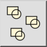
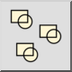

Menù: Blocco > Deselezionare riferimenti di blocco
Scorciatoia: B, -
Comandi: blockdeselect | deselectblock | b-
Barra degli strumenti / Icona:
 

Menù: Blocco > Deselezionare riferimenti di blocco
Scorciatoia: B, -
Comandi: blockdeselect | deselectblock | b-
Descrizione:
Questa funzione deseleziona tutti i riferimenti di blocco relativi al blocco correntemente selezionato nella lista.